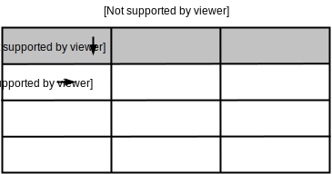
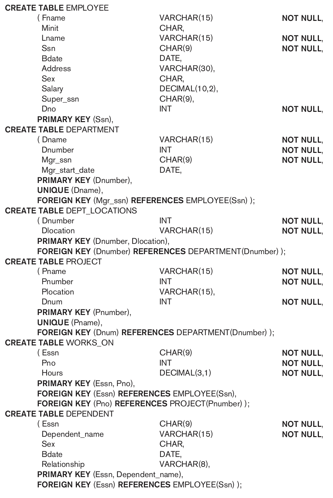

Aula 14 (2019-05-23)
Passos para trabalhar-se com BD: conceitos de engenharia de software
-
Requisitos;
-
Análise;
-
Projeto;
-
Implementação;
-
Teste.
Requisitos
Textos, conversas, formulários, relatórios, etc são fontes para se formular os requisitos de um sistema computactional e muitas vezes extendendo-se para requisitos do banco de dados desse sistema.
Aconselha-se documentar-se os requisitos, pois:
- Geralmente existe uma quantidade grande de requistios;
- A partir deles são analisadas e projetadas as funcionalidades do sistema e portanto o banco de dados por consequência;
- Prova do que foi discutido para se analisar, projetar e implementar.
Requisitos é a parte primordial do sistema e banco de dados, com eles gera-se um escopo (limite) de até onde deve-se desenvolver o sistema.
Muitas vezes os requisitos são modificados, principalmente no começo da proposta do sistema e banco. Dessa forma passos posteriores devem ser revistos.
Análise
Análise dos requisitos levantados é feita para que depois seja projetado o sistema (e o BD).
Os requisitos devem ser analisados do ponto de vista de viabilidade e riscos por exemplo. Alguns requisitos podem ser muito difíceis de se criar funcionalidades, e portando levar muito tempo ou demandar muita mão-de-obra. Logo tudo isso deve ser discutido para iniciar-se o projeto.
Projeto
Requisitos são mapeados para funcionalidades nesse passo.
Questões de projeto de infra-estrutura: servidores, rede, banco de dados, etc.
Protótipos, diagramas do sistemas e banco são sintetizados.
Implementação
O banco de dados é implementado na infra-estrutura definida. Dessa forma já pode ser usado para criar tabelas, fazer consultas e povoar esse banco.
Estamos aqui, iniciaremos a criação de fato de um banco, e conhecer ferramentas para fazer consultas no banco para: criar, inserir, atualizar, selecionar (ler) e excluir dados do banco de dados.
Teste
O teste tem um papel de valiar o sistema e banco após estes serem implementados. Muitas vezes testes são feitos junto com implementação, para que testes já indiquem possíveis erros de implementação antecipadamente.
Álgebra Relacional e SQL
Historicamente a álgebra e cálculo relacional foram desenvolvidos antes da linguagem SQL. SQL é primariamente baseada em conceitos de cálculo relacional e foi extendida para incorporar alguns conceitos de álgebra também.
Devido a maioria dos SGBDs usarem SQL como sua linguagem, SQL pode ser apresentada antes.
SQL (Structured Query Language)
- Linguagem declarativa: o usuário especifica qual resultado deve ser, e deixa a otimizacação e decisão de como executar a query ("pergunta") para o SGBD;
Definição de dados e tipo de dados
SQL usa os termos table, row e column do modelo relacional: relação, tupla e atributo respectivamente. Podemos usar esses termos de forma intercambiável.

O comando CREATE pode ser usado para criar schemas, tables, types e domains, entre outras ações.
Schema
- Pode ser chamado em algumas linguagens como database;
- Definido por um nome (schema name);
- Tem um identificador de autorização (authorization identifier) para identificar quem é o o dono do schema, assim como descritores descriptors para cada elemento (element) do esquema;
- Elementos do esquema (element) incluem tabelas, tipos, restrições, visões, etc;
- Esquemas são criados com a declaração
CREATE SCHEMA.
Exemplo
Para criar um esquema chamado COMPANY em que o dono é o usuário Jsmith:
CREATE SCHEMA COMPANY AUTHORIZATION 'Jsmith';
Em geral nem todos usuários são autorizados a criar esquemas e elementos. Esse privilégio deve ser dado por uma conta de administrador do SGDB, um DBA (Database Admin).
Catálogo (catalog)
O conceito de catálogo catalog é um nome para um coleção de esquemas.
Comando CREATE TABLE em SQL
Usado para especificar uma nova relação ao dar um nome e especificando seus
atributos e restrições iniciais. Os atributos são especificados primeiro,
e cada atributo é dado um nome, tipos de dados (data type) especificam o domínio
dos valores e possivelmente as restrições de atributos, como por exemplo NOT NULL
(não nulo).
A chave (key), integridade de entidade, e restrições de integridade referenciais
podem ser especificadas dentro de CREATE TABLE depois dos atributos declarados, ou
podem ser adicionados depois ao usar o comando ALTER TABLE.
As tabelas criadas com CREATE TABLE são chamadas de tabelas base, pois essas
tabelas são realmente criadas em arquivos pelo SGBD.
Exemplo
Para criar uma tabela dentro do esquema da COMPANY:
CREATE TABLE COMPANY.EMPLOYEE
CREATE TABLE EMPLOYEE
Exemplo
